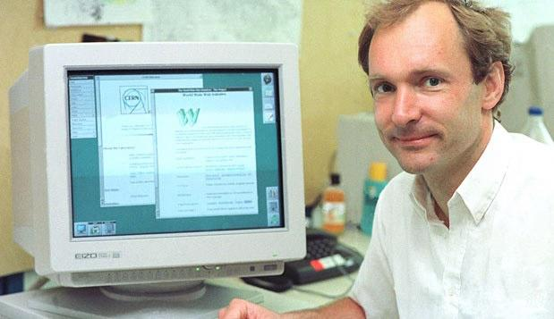
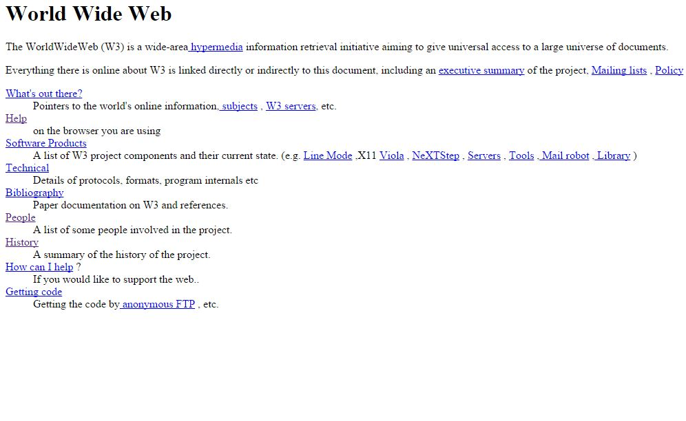

HTML (від англ. HyperText Markup Language - "мова гіпертекстової розмітки") - стандартизована мова розмітки веб-сторінок у Всесвітньому павутинні. Код HTML інтерпретується браузерами; отримана в результаті інтерпретації сторінка відображається на екрані монітора комп'ютера або мобільного пристрою. Мова HTML до 5-ї версії визначалася як додаток SGML (стандартної узагальненої мови розмітки за стандартом ISO 8879). Специфікації HTML5 формулюються у термінах DOM (об'єктної моделі документа). Суворим варіантом HTML є XHTML, він успадковує синтаксис XML і є додатком мови XML в області гіпертекстової розмітки. HTML-сторінки зазвичай відкриваються браузерами обмінюючись із сервером інформацією за протоколом HTTP або HTTPS, у вигляді простого тексту або з використанням шифрування.
Давним давно, практично на зорі цивілізації (до 70-х років XX століття), не було інтернету. Загалом не було. З появою комп'ютерів з'явилося бажання та потреба якось їх об'єднати, і 4 великі університети США взялися за це завдання. Приблизно 7 років минуло від створення концепції до історичного моменту: 29 жовтня 1969 року було проведено сеанс зв'язку між двома першими вузлами мережі ARPANET, на відстані 640 км: в Каліфорнійському університеті та в Стенфордському дослідному інституті. Вчений із Лос-Анджелеса підключився віддалено до комп'ютера в Стенфорді. Стенфордський колега бачив, як на екрані з'являються символи, введені на відстані, і підтверджував по телефону передачу кожної літери. У такий спосіб почалася епоха комп'ютерних мереж. Довгий час Інтернет був призначений лише для спеціалістів і служив в основному для обміну технічної документації та імейлами. Простому користувачеві робити там не було чого. І лише на початку 90-х минулого століття відбулася революція "інтернет-народу!"
 Британець Тімоті Джон Бернерс-Лі в Женевському ЦЕРНі винайшов мову гіпертекстової розмітки, він HyperText Markup Language, він же HTML, призначений для розмітки та оформлення документів World Wide Web.Ах так! Ще Сер Тім розробив глобальний гіпертекстовий проект (зараз Ви знаєте його як Всесвітню павутину). Власне HTML і народився в процесі роботи над цим проектом. HTML це спадкоємець SGML, ось тільки створювався він для того, щоб ним могли користуватися і люди-нефахівці в галузі верстки. Тобто. вже з перших днів у HTML були такі плюси: Простота - за рахунок невеликого набору структурних елементів - дескрипторів (вони ж "теги"). Усі теги пишуться у кутових дужках, і несуть якесь смислове навантаження. Можливість форматувати документ без прив'язки до засобів відображення (будь то монітор комп'ютера, екранчик телефону, або рідер) І як ви вже, напевно, здогадалися, перший у світі веб-сайт створив теж Тім Бернерс-Лі І якщо точна дата винаходу HTML не відома (т.к. це був довгостроковий проект), то день народження9 року навіть дуже. До речі, його можна побачити і сьогодні, щоправда, вже в архіві. Вважаю, всі веб-розробники з повним правом можуть вважати саме 6 серпня своїм професійним святом 🙂

У цій версії з її сорока з копійками тегів вже з'явилося аж 3 теги, які натякали на якесь візуальне оформлення документа (наприклад, напівжирний курсив). Інші теги служили виключно для логічної розмітки.
Сер Тім Бернерс-Лі заснував Консорціум Всесвітньої мережі (World Wide Web Consortium, W3C). Місією W3C було, є і буде "Повністю розкрити потенціал Всесвітньої павутини, шляхом створення протоколів і принципів, що гарантують довгостроковий розвиток Мережі...". Величезна заслуга цих хлопців полягає в тому, що HTML був випущений з єдиним базовим набором тегів та атрибутів, і веб-сторінки стали такими, якими ми їх знаємо зараз. Тільки уявіть, в середині дев'яностих, кілька найбільших виробників програм планували випустити свої версії HTML зі своїми назвами тегів. Яка каша була б зараз у сфері веб-розробки! Наприклад оголошення про роботу: «Шукаємо верстальника для створення сайтів у Mozilla Firefox», «Терміново потрібен верстальник для Edge», «Потрібен верстальник для Kindle»… словом, дякую W3C.
Процес розробки та затвердження нової версії був дуже неспішним, а єдиним помітним покращенням нової версії стали:
Перший варіант стандарту включав багато цікавостей, таких як теги для створення таблиць, розмітки математичних формул, обтікання зображень текстом та ін.
Автори раптом згадали, що за своєю ідеєю HTML повинен тільки розмічати структуру документа і не повинен містити параметри графічних стилів відображення елементів у браузері. При створенні HTML 3.0 розробники ламали голову, як вирішити нестиковку між ідеологією структурної розмітки та потребами користувачів, яких набагато більше цікавив зовнішній вигляд веб-сторінки. І щоб ця суперечність не змінила початкові властивості HTML, творці третьої версії вирішили додати до неї підтримку нового засобу, який служив для оформлення веб-сторінок.
CSS (Cascading Style Sheets), а російською – ієрархічні стильові специфікації. Думаю, зрозуміліше не стало?)) Якщо вже російською, то це таблиці стилів, які приєднуються до документа HTML і служать для візуального оформлення тих чи інших частин документа.
Отже, система CSS:
А тим часом, у далекій галактиці... Microsoft помітив стрімкий зліт компанії Netscape на продажу браузерів Navigator і звичайно ж, не міг стояти осторонь. У MS трохи переробили браузер Mosaic і почали випускати свої експлорери, які спочатку не дуже полюбилися користувачам (та й не тільки спочатку;)). У серпні 1996 була створена версія Internet Explorer 3.0. Браузер пропонував значні нововведення на той час і набув популярності, що поділило ринок браузерів навпіл між Netscape Communications і Microsoft. І в цей же час Microsoft узяв під свою опіку W3C.
У цій версії неабияк підчистили елементи з попередніх версій. Багато тегів було позначено як застарілі та не рекомендовані до використання. Замість них потрібно було використовувати таблиці стилів CSS.
Нова версія включала підтримку кадрів, скриптів, загальну процедуру впровадження різних об'єктів. Також в ній були вдосконалені таблиці та форми, що, крім інших плюсів, забезпечувало більшу доступність для людей з фізичними вадами.
Версія HTML 4 була розроблена за допомогою експертів у галузі інтернаціоналізації, таким чином стало можливо писати документи будь-якою мовою та легко передавати їх по всьому світу
2004 рік: Швейцарський програміст Ян Хіксон (на той момент розробник в Opera) і кілька представників таких компаній як Mozilla, Google та Apple, заснував робочу групу під назвою WHATWG (Web Hypertext Application Technology Working Group).
Приводом для створення подібної спільноти став той факт, що W3C на той момент втратив інтерес до HTML і зайнявся розвитком XML, а на його основі - мови гіпертекстової розмітки, що розширюється, XHTML. Не заглиблюватимемося в деталі, т.к. на даний момент ця мова перестала розвиватися.
Два роки W3C та WHAT Working Group працювали кожен над своїм проектом. Але згодом стало видно, що WHAT Working Group досягає якихось результатів, тоді як XHTML 2 так і не реалізувався.
І в 2006 році Тім Бернерс-Лі оголосив, що W3C і WHATWG разом працюватимуть над подальшим розвитком HTML.
З цього дня W3C офіційно рекомендує використовувати HTML5.
На даний момент розвиток HTML продовжується. W3C виклав на початку червня робочу чернетку версії 5.1. Консорціум просить усіх писати свої відгуки та коментарі щодо цієї версії, т.к. HTML залишається як і раніше проектом, над яким працюють одночасно безліч небайдужих людей, які люблять кутові дужки.
🔝